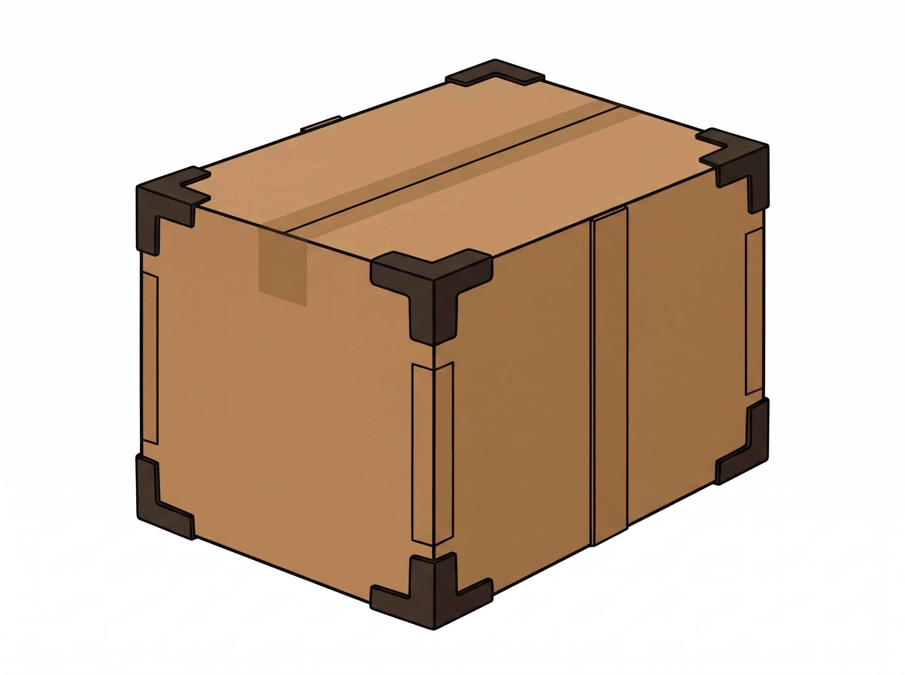

🎙️ Dengarkan Pesan dari Bu Sari
Halo, adik-adik! Kenalkan, aku Bu Sari, pengrajin gerabah dari Kasongan, Bantul.
Toko oleh-oleh di Malioboro memesan 250 kardus souvenir gerabah mini dariku. Isinya kemasan-kemasan kecil berbentuk kubus berukuran 10 sentimeter. Kardusnya berbentuk balok, dengan panjang 40, lebar 30, dan tinggi 20 sentimeter.
Masalahnya, gerabah itu mudah pecah. Kardus dikirim pakai truk ekspedisi yang sering berguncang, dan ditumpuk lima tingkat. Kalau kardusnya penyok, gerabahku bisa retak!
Karena itu, aku butuh bantuan kalian untuk tiga hal.
Pertama, rangkanya. Pemasok menjual pelindung sudut dan lis penguat yang sudah dipotong per ukuran. Berapa banyak yang harus aku pesan untuk satu kardus?
Kedua, kartonnya. Karton dipotong dari lembaran persegi panjang. Aku mau pola jaring-jaring yang paling hemat, supaya sisa potongannya sedikit.
Ketiga, isinya. Berapa besar ruang di dalam kardus, dan berapa kemasan kecil yang muat?
Oh ya, pembeli dari luar kota minta kardus jumbo dengan ukuran dua kali lipat. Nanti kita lihat, apa saja yang berubah!
Semua temuan kalian, catat di Lembar Pesanan, ya. Itu yang akan aku kirim ke pemasok.
Sebelum mulai, coba tebak dulu: kalau kardus ditumpuk lima tingkat, beban akan turun lewat bagian mana? Siap? Yuk, kita mulai!
Berdasarkan pesan suara dari Bu Sari di atas, bantu Bu Sari memecahkan 3 tantangan utama dalam merancang kardus souvenir gerabah ini:
Kardus contoh berukuran 40 × 30 × 20 cm. Kardus jumbo berukuran 2× lipat. Lembar ini kamu lengkapi sepanjang penyelidikan:
Istilah Kunci Penyelidikan
Tiga ukuran balok: panjang dan lebar pada alas, serta tinggi yang tegak.
Bidang datar pembatas balok (berbentuk persegi panjang).
Garis pertemuan dua sisi (tiang penyangga rangka).
Titik pertemuan tiga rusuk (pojok kardus).
Pelindung yang dipasang di pojok kardus, satu untuk setiap titik sudut.
Batang penguat yang dipasang menempel sepanjang rusuk. Dijual per ukuran panjang.
Pola karton datar saat kardus dibentangkan.
Total luas seluruh karton pembungkus kardus.
Kapasitas total ruang di dalam kardus.
Kubus kecil pembanding untuk mengukur isi ruang.
Amati gambar kardus, lalu bayangkan kardus itu dilihat tepat dari arah atas:
👥 Identitas & Pembagian Peran Kelompok
Diskusikan bersama dan pilih peranmu dalam kelompok hari ini:
🗺️ Alur Penyelidikan & Titik Henti Wajib (Check-Points)
Tuliskan dugaan jumlah unsur balok (sisi, rusuk, titik sudut), apakah semua rusuk dan semua sisinya sama ukuran, serta apa yang akan kelompok kalian lakukan jika nanti hasil simulasi berbeda dari dugaan kalian.